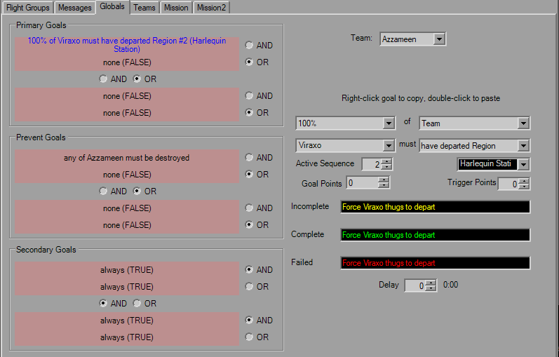

Global Goals

This tab is fairly straight forward and defines the global goals for each team. Four conditions for each goal, standard trigger rules apply, including the toolbar and mouse controls for Copy and Paste functionality.
Unlike TIE, points can be added/subtracted from each set of goals, as well as each individual trigger. Custom goal strings for each applicable goal state can be set as well. Also available are the additional Active Sequence and parameter fields.
As was the case in previous platforms, ensure that when using single conditions the others are set to "OR FALSE" or "AND TRUE" to satisfy boolean logic, as many times I've seen this been set to "AND FALSE" which basically means the goal will never complete, and you'll never finish the mission. YOGEME defaults to "OR FALSE" so you shouldn't have to worry about it.